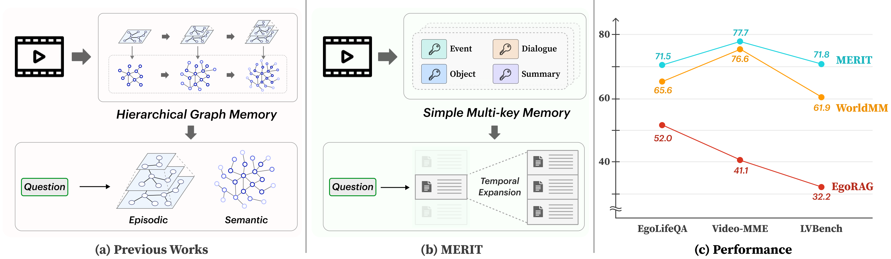
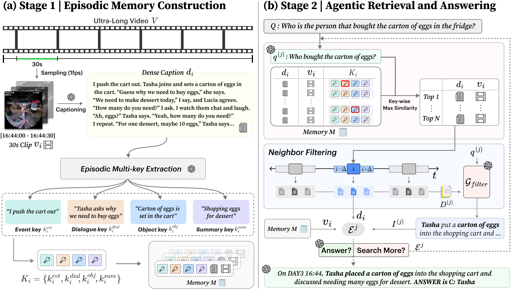
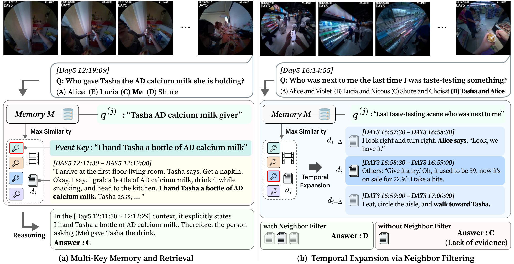

Prior ultra-long video methods pour effort into complex hierarchical or graph memory at build time — before the query is even known. MERIT flips this: it builds a simple episodic multi-key memory for high-recall retrieval, and defers query-specific reasoning to inference time via on-demand neighbor filtering. Without building complex, high-cost memory, MERIT achieves state-of-the-art results on EgoLifeQA, LVBench, and Video-MME (Long).
A simple yet effective agentic framework — MERIT — that prioritizes high-recall retrieval and defers semantic composition to inference time.
Good retrieval doesn't need complex memory — simple, raw evidence is enough.
When a video stretches from hours to days, you can't feed it into an MLLM end-to-end. So the field splits the task into two stages: first build an external memory from the whole video — before any question is known — then, at inference time, retrieve from it to answer each query.

Prior work over-builds complex memory — hierarchies and graphs — running the strongest MLLMs over the whole video in many passes. Because it's query-agnostic, this expensive abstraction may not match what is ultimately asked.
Keep the memory simple and high-fidelity, and defer high-level relation reasoning to inference time — when the query finally tells you which relations and abstractions actually matter.
Intelligence Allocation. Spending your strongest MLLM on preprocessing done before the task is even specified is wasteful. Preserve high-fidelity episodic evidence and defer semantic composition to query time. The bottleneck then shifts from pre-building static semantics to high-recall retrieval that reliably surfaces the right evidence.
MERIT turns this idea into two lightweight components: a simple, high-recall episodic memory, and query-aware refinement that composes the right evidence on demand at inference time — detailed below.
MERIT = Multi-key Episodic Retrieval with Inference-time Temporal expansion.

A clip can be relevant for very different reasons — a physical action, a spoken mention, an object being handled, or just coarse scene context. Collapsing all of that into a single index is brittle. Instead, MERIT attaches four complementary keys to every 30-second clip, and scores relevance by the maximum similarity across a clip's keys — so each clip can match through its best-aligned aspect. This late-interaction matching is what drives MERIT's high recall.
Observable physical actions and interactions between entities.
Spoken content, exact words, or commands from the audio track.
Items handled, requested, or moved, along with state transitions.
A compact keyword-style abstraction of the clip's core narrative.
The evidence needed to answer a question often spans several nearby moments, not a single 30-second clip. So when a clip is retrieved, MERIT attaches its temporally adjacent neighbors (±Δ) on demand — the simplest possible graph over the timeline — then uses the solver as a query-aware filter to distill only what's relevant. Coherent context is reconstructed at inference time, with no pre-computed hierarchies.
Pull in ±Δ adjacent clips around each retrieved anchor
(e.g. ±1 min).
The solver filters the expanded context, keeping only query-relevant evidence.
New SOTA across ultra-long and hour-long video QA.
MERIT uses only single-granularity 30-second clips with lightweight multi-keys — no hierarchies, no graphs — and still attains the highest hit rate and highest accuracy, confirming that precise retrieval is the real bottleneck in ultra-long video QA.
Per-QA-type accuracy (%) on the GPT-5 backbone (axes 0–80).
| Model | EntityLog | EventRecall | HabitInsight | RelationMap | TaskMaster | Avg |
|---|---|---|---|---|---|---|
| MLLMs (Uniform Sampling) | ||||||
| Qwen3-VL-8B | 35.2 | 30.2 | 39.3 | 46.4 | 46.0 | 38.6 |
| Gemini 2.5 Pro | 43.2 | 40.5 | 41.0 | 55.2 | 52.4 | 46.4 |
| GPT-5 | 47.2 | 42.1 | 47.5 | 53.6 | 55.6 | 48.6 |
| Hierarchical Memory Based | ||||||
| EgoRAG (GPT-5) | 40.0 | 56.3 | 62.3 | 54.4 | 52.4 | 52.0 |
| Ego-R1 (3B) | 51.2 | 53.2 | 63.9 | 50.4 | 50.8 | 53.0 |
| Graph Memory Based | ||||||
| LightRAG (GPT-5) | 40.8 | 48.4 | 67.2 | 50.4 | 44.4 | 48.8 |
| HippoRAG (GPT-5) | 48.8 | 60.3 | 70.5 | 60.8 | 66.7 | 59.6 |
| Video-RAG (GPT-5) | 49.6 | 56.3 | 67.2 | 55.2 | 54.0 | 55.4 |
| HippoMM (GPT-5) | 45.6 | 53.2 | 70.5 | 55.2 | 58.7 | 54.6 |
| M3-Agent (7B) | 44.4 | 54.8 | 62.3 | 56.8 | 54.0 | 53.5 |
| EGAgent (Gemini 2.5 Pro) | 54.4 | 57.1 | 60.3 | 62.4 | 74.6 | 57.5 |
| WorldMM (Qwen3-VL-8B) | 49.6 | 56.4 | 63.9 | 58.4 | 58.7 | 56.4 |
| WorldMM (GPT-5) | 62.4 | 64.3 | 75.4 | 62.4 | 71.4 | 65.6 |
| Ours | ||||||
| MERIT (Qwen3-VL-8B) | 43.2 | 54.0 | 67.2 | 53.6 | 65.1 | 54.2 |
| MERIT (Gemini 2.5 Pro) | 60.8 | 61.1 | 65.6 | 65.6 | 73.0 | 64.2 |
| MERIT (GPT-5) | 67.2 | 70.6 | 73.8 | 74.4 | 71.4 | 71.2 |
Accuracy (%), axis starts at 50 · the longer the video, the larger MERIT's lead.
| Model | LVBench | Video-MME (L) |
|---|---|---|
| MLLMs (Uniform Sampling) | ||
| Gemini 2.5 Pro | 57.0 | 55.7 |
| GPT-5 | 60.4 | 74.3 |
| Hierarchical Memory Based | ||
| EgoRAG (GPT-5) | 32.2 | 41.1 |
| Ego-R1 (3B) | 34.1 | 42.7 |
| Graph Memory Based | ||
| LightRAG (GPT-5) | 30.4 | 46.6 |
| HippoRAG (GPT-5) | 54.0 | 52.1 |
| Video-RAG (GPT-5) | 33.1 | 55.4 |
| HippoMM (GPT-5) | 38.2 | 41.6 |
| M3-Agent (7B) | 49.3 | 55.3 |
| EGAgent (Gemini 2.5 Pro) | – | 74.1 |
| WorldMM (GPT-5) | 61.9 | 76.6 |
| Ours | ||
| MERIT (Gemini 2.5 Pro) | – | 76.3 |
| MERIT (GPT-5) | 71.8 | 77.7 |
Against the graph-memory SOTA (WorldMM), MERIT builds its memory once per clip instead of re-reading and consolidating across many scales.
For more ablations and analysis, please refer to the paper.
On EgoLifeQA: precise multi-key matching localizes the right moment, and neighbor filtering supplies the surrounding context relational queries need.

Please cite MERIT if you find this work useful.
@inproceedings{choi2026merit,
title = {Keep It Simple: Multi-Key Episodic Memory Retrieval
for Ultra-Long Video Understanding},
author = {Choi, Yeeun and Yoo, Youngbeom and Lee, Joon-Young
and Kang, Hyolim and Kim, Seon Joo},
booktitle = {European Conference on Computer Vision (ECCV)},
year = {2026}
}